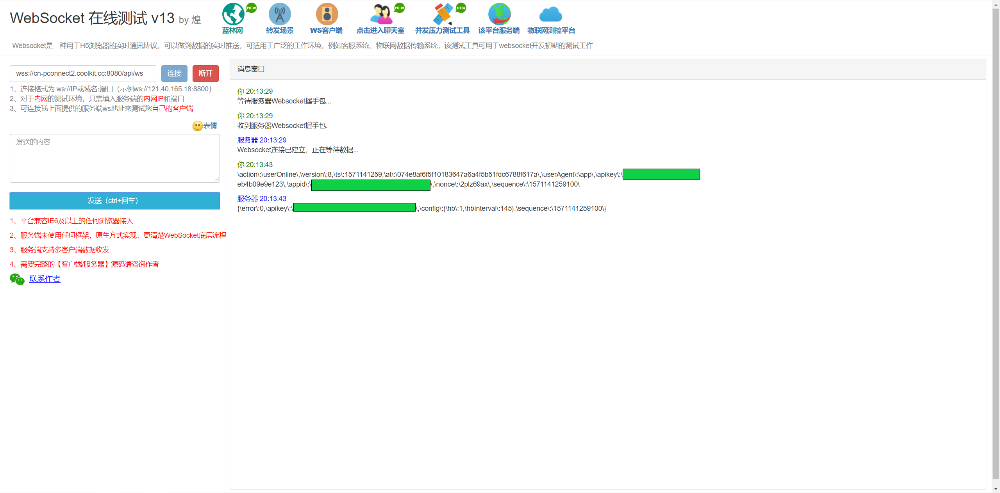
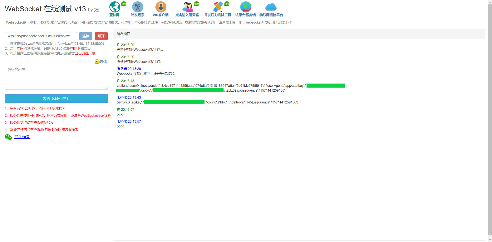

示例
示例数值仅供参考，具体开发过程，请替换成自己的参数。
第一步：登录，认证帐号获取认证token，通过认证后才能获取访问服务的权限。
第二步：设备列表，获取帐号下添加的所有设备。设备控制时需要提供相关设备数据以及用户数据。
第三步：访问分配服务，获取连接信息。
第四步：建立长连接，通过第三步获取的长连接信息，建立连接。
第五步：握手，通过第一步获取的认证信息(at即access token)，进行握手，握手成功后，表示认证通过，允许进行设备控制。
第六步：控制设备，通过第二步获取的设备信息，发送update指令进行设备控制。
第一步：登录
接口测试工具：https://www.getpostman.com/
在线快速测试：https://getman.cn/
- 接口地址： https://cn-api.coolkit.cn:8080/api/user/login
- 请求方法： POST
请求参数：
Headers：
| 名称 | 参数值 | 是否必须 | 示例 |
|---|---|---|---|
| Authorization | Sign+空格+签名值 | 是 | Sign Qbd+knKCUb8LAP6yMv1SSqYwmm1vDIxG3rHeq1Ul+ |
| Content-Type | application/json | 是 | application/json |
Params： |参数名|类型|是否必须|备注| :-: | :-: | :-: | :-: | :-: |phoneNumber|string|-|登录手机（优先）| |email|string|-|登录邮箱| |password|string|是|登录密码| |appid|string|是|APPID| |nonce|string|是|8位字母数字随机数| |ts|int|是|时间戳精确到秒| |version|int|是|预设版本|
示例：
{
"appid":"McFJj4Noke1mGDZCR1QarGW7P9Ycp0Vr",
"phoneNumber":"+8613123456789",
"password":"12345678",
"ts": 1558004249,
"version":8,
"nonce":"q3wz95p6"
}
备注：
接口路径中的cn代表服务器区域，可替换成eu、us、as 签名值计算规则请查看 开发通用说明
响应参数(基础):
| 参数名 | 类型 | 是否必须 | 备注 |
|---|---|---|---|
| error | string | 否 | 失败时返回，且只会返回error |
| at | string | 否 | Access Token，at有效期为一个月（注意：每登录一次，at会重新生成，不支持同帐号多处使用） |
| rt | string | 否 | Refresh Token，rt有效期为两个月，用于刷新at |
| user | Object | 否 | 用户信息 |
| region | String | 否 | 注册区域 |
错误码（以实际为准）：
400：参数不完整或错误
301：账号注册在其他区域，需要查询「区域接口」重定向
401：账号密码错误
402：账号未激活
404：账号不存在
406：认证失败（APPID错误或签名错误）
500：服务器内部错误
返回示例(数据已脱敏)：
{
"at":"a527297584f1ca030579a90d2e800481e22e850a",
"rt":"24670a9e493ba18cf5d9750f14505705824fcfd9",
"user":{
"_id":"5c984cd3dc8295fa0ef3e592",
"phoneNumber":"+8613123456789",
"appId":"McFJj4Noke1mGDZCR1QarGW7P9Ycp0Vr",
"lang":"cn",
"online":false,
"onlineTime":"2019-05-16T10:48:42.091Z",
"ip":"113.87.160.95",
"location":"广东",
"offlineTime":"2019-05-16T10:51:22.090Z",
"appInfos":[
{
"appVersion":"3.13.0",
"os":"android"
}
],
"nickname":"eWelink",
"createdAt":"2019-03-25T03:36:51.335Z",
"apikey":"95da0fea-5692-469a-c562-4dd5ee9a51f1"
},
"region":"cn"
}
备注：
- at为其他请求必须携带的参数，代替Authorization的值（Authorization：Bearer+空格+at）
- rt存在的目的是刷新at
- region为账号注册所在区域
第二步：请求设备列表
- 接口地址： https://cn-api.coolkit.cn:8080/api/user/device
- 请求方法： GET
请求参数：
Headers：
| 名称 | 参数值 | 是否必须 | 示例 |
|---|---|---|---|
| Authorization | Bearer+空格+at | 是 | Bearer a527297584f1ca030579a90d2e800481e22e850a |
| Content-Type | application/json | 是 | application/json |
Body:
| 参数名 | 类型 | 是否必须 | 备注 |
|---|---|---|---|
| lang | string | 否 | cn 响应返回中文信息；en 响应返回英文信息 |
| appid | string | 是 | APPID |
| nonce | string | 是 | 8位字母数字随机数 |
| ts | int | 是 | 时间戳精确到秒 |
| version | int | 是 | 预设版本 |
示例：
{
"lang":"cn",
"appid":"McFJj4Noke1mGDZCR1QarGW7P9Ycp0Vr",
"nonce":"q3wz95p6",
"ts": 1558004249,
"version":8
}
// 最终结构：https://cn-api.coolkit.cn:8080/api/user/device?lang=cn&appid=McFJj4Noke1mGDZCR1QarGW7P9Ycp0Vr&nonce=q3wz95p6&ts=1558004249&version=8
备注：GET请求会将Json格式数据转为特定字符，放到URL中。
响应参数(基础):
| 参数名 | 类型 | 是否必须 | 备注 |
|---|---|---|---|
| error | string | 否 | 失败时返回，且只会返回error |
| devicelist | Object | 否 | 设备信息列表 |
错误码：暂无
返回示例(数据已脱敏)：
[
{
"_id": "***************",
"name": "我的设备213ac8",
"type": "10",
"deviceid": "1000213ac8",
"apikey": "3541f7af-*ec5-4502-9bf3-eb4b09e9e12*",
"extra": {
"_id": "***************",
"extra": {
"model": "PSA-B11-GL",
"ui": "单通道开关",
"description": "WWJG001111",
"manufacturer": "深圳创易智能系统有限公司",
"mac": "**:**:**:**:**:**",
"apmac": "**:**:**:**:**:**",
"modelInfo": "***************",
"brandId": "***************",
"uiid": 6,
"staMac": "**:**:**:**:**:**",
"chipid": "********"
}
},
"__v": 0,
"onlineTime": "2019-10-15T07:22:14.361Z",
"ip": "110.110.110.110",
"location": "广东",
"settings": {
"opsNotify": 0,
"opsHistory": 1,
"alarmNotify": 1,
"wxAlarmNotify": 0,
"wxOpsNotify": 0,
"wxDoorbellNotify": 0,
"appDoorbellNotify": 1
},
"devGroups": [],
"groups": [],
"params": {
"pulseWidth": 500,
"pulse": "off",
"init": 1,
"startup": "off",
"staMac": "**:**:**:**:**:**",
"rssi": -50,
"fwVersion": "3.0.1",
"switch": "off",
"sledOnline": "on",
"version": 8
},
"online": true,
"createdAt": "2019-10-15T07:22:11.700Z",
"group": "",
"sharedTo": [],
"devicekey": "***************",
"deviceUrl": "",
"brandName": "Maker",
"showBrand": true,
"brandLogoUrl": "",
"productModel": "Sonoff basic R2",
"devConfig": {},
"uiid": 6
}
]
备注：
- sharedBy：分享方的信息（接收方查看设备列表才显示）
- sharedTo：被分享方的信息（分享方查看设备列表才显示）
- 不同设备的UIID会不同，UI决定显示的效果
- 如果返回为[]，则可能意外着账号下没有设备或者该设备品牌没- 有关联到你的APPID（解决办法是找对接销售授权）
第三步：请求分配服务
- 接口地址： https://cn-api.coolkit.cn:8080/dispatch/app
- 请求方法： POST
请求参数：
Headers：
| 名称 | 参数值 | 是否必须 | 示例 |
|---|---|---|---|
| Authorization | Bearer+空格+at | 是 | Bearer a527297584f1ca030579a90d2e800481e22e850a |
| Content-Type | application/json | 是 | application/json |
Params：
| 参数名 | 类型 | 是否必须 | 备注 |
|---|---|---|---|
| accept | string | 是 | 默认填ws即可 |
| appid | string | 是 | APPID |
| nonce | string | 是 | 8位字母数字随机数 |
| ts | int | 是 | 时间戳精确到秒 |
| version | int | 是 | 预设版本 |
示例：
{
"accept":"ws",
"appid":"McFJj4Noke1mGDZCR1QarGW7P9Ycp0Vr",
"ts": 1571139270,
"version":8,
"nonce":"po89ks8z"
}
响应参数(基础):
| 参数名 | 类型 | 是否必须 | 备注 |
|---|---|---|---|
| IP | string | 是 | 长连接服务器外网IP |
| port | int | 是 | 长连接服务器外网端口 |
| domain | string | 是 | 长连接服务器域名。目前只有app端才会返回域名。android客户端尽量选择用ip建立长连接，这样可以减少dns解析带来的问题，js版客户端无法跳过证书检查，那么就只能用域名了。 |
| error | string | 是 | 成功返回error:0 |
| reason | string | 是 | 成功返回ok |
错误码：暂无
返回示例：
{
"port": 8080,
"IP": "52.80.19.131",
"reason": "ok",
"domain": "cn-pconnect2.coolkit.cc",
"error": 0
}
第四步：建立长连接
创建WebSocket连接和发送控制命令流程：

通过第三步请求分配服务返回的IP或者domain+Port建立长连接。
请求：wss://cn-pconnect2.coolkit.cc:8080/api/ws
WebSocket测试工具：http://www.blue-zero.com/WebSocket/
第五步：握手
如上图提示「Websocket连接已建立，正在等待数据…」，就表示连接成功了，可以开始握手。
握手示例数据：
{
"action":"userOnline",
"version":8,
"ts":1571141259,
"at":"登录接口获取的AT",
"userAgent":"app",
"apikey":"登录接口获取的用户APIKEY",
"appid":"McFJj4Noke1mGDZCR1QarGW7P9Ycp0Vr",
"nonce":"2plz69ax",
"sequence":"毫秒级时间戳，举例：1571141530100"
}
// 需去掉空格压缩
握手成功响应：

示例：
{
"error":0,
"apikey":"登录接口获取的用户APIKEY",
"config":{
"hb":1,
"hbInterval":145
},
"sequence":"毫秒级时间戳，举例：1571141259100"
}
心跳时间：
「hbInterval」为心跳时间，需要在145s内发送「ping」，保持心跳，服务器收到ping后会响应「pong」，自己测试时刻手动发送ping。

第六步：控制设备
说明：
设备在状态改变时会上报信息，这时候如果是APP收到信息，就会同步显示状态，如果自己做服务器或者客户端，也可以将这个变化记录下来，方便自己做统计或者做历史记录功能。

发送控制指令：
params的协议根据不同设备有所不同，商务合作后会根据对接的设备提供 「协议文档」。
「apikey、deviceid、sequence、params」都要替换成自己已经添加设备的参数
参数说明请查看「更新/上报状态」
示例：
{
"action":"update",
"apikey":"登录接口获取的用户APIKEY",
"deviceid":"设备列表接口获取的设备ID",
"userAgent":"app",
"sequence":"毫秒级时间戳，举例：1571141530100",
"params":{
"switch":"off"
}
}
// 需去掉空格压缩

控制指令返回：
返回「error:0」表示成功，更多错误码请查看「更新/上报状态」
示例：
{
"error":0,
"deviceid":"设备列表接口获取的设备ID",
"apikey":"登录接口获取的用户APIKEY",
"sequence":"1571141530100"
}
注意：
- 如果设备是别人分享给你的，apikey一定要从设备列表接口返回的apikey参数中获取值，如果设备主人就是自己，则登录返回的用户apikey和设备列表返回的apikey都可以。
- 设备一定要在线。发送指令成功后，观察设备是否执行了开或者关，不在线一定报错。
- 整个流程顺利完成，接下来在「API中心」查看如何使用区域功能，帐号功能，设备管理功能，设备控制功能，认证功能。